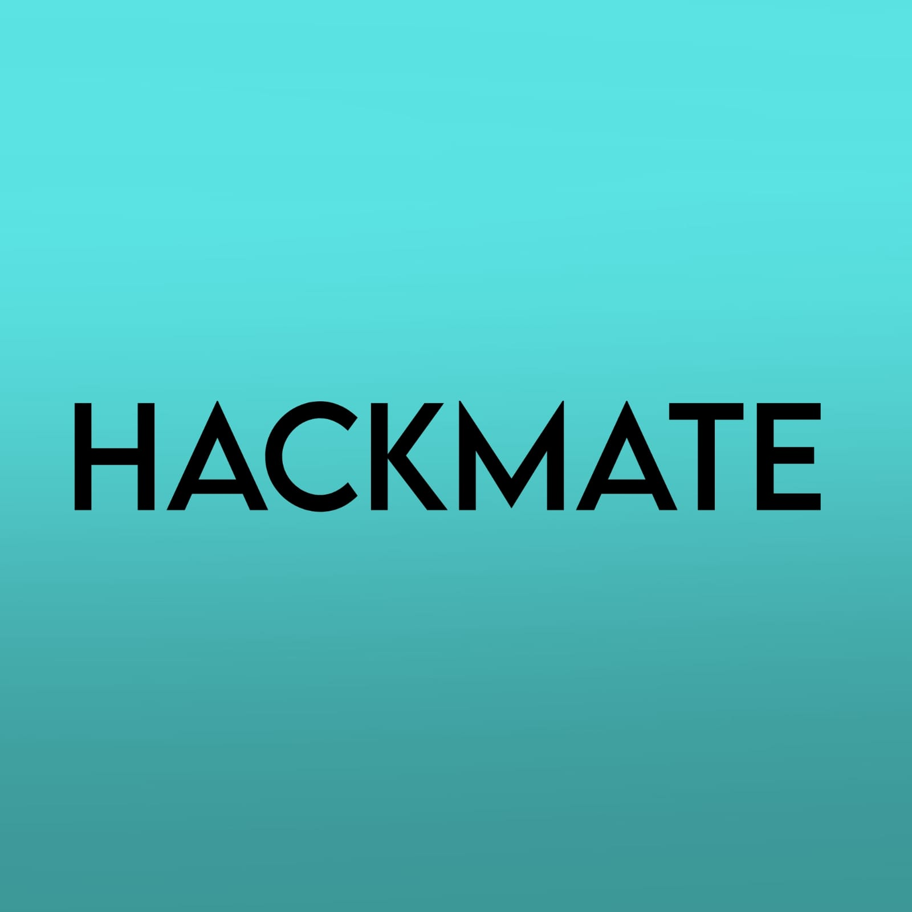

"Welcome to Hackmate, the ultimate hackathon management system! We are a platform designed to connect hackathon organizers, participants, and sponsors from all over the world. Our mission is to make it easier for hackers to find teammates, work on innovative projects, and showcase their skills to the world.
Our platform is specifically designed to simplify the process of finding team members for hackathon participants. We know how daunting it can be to start a hackathon without a team or to join a team without knowing anyone. That's why we've developed a unique algorithm that matches participants based on their skills, interests, and availability. With Hackmate, you can easily find a team that fits your needs and start working on your project right away.
In addition to our team-finding feature, Hackmate also offers a range of other tools and resources to help hackathon organizers, participants, and sponsors. Our platform includes features like real-time project updates, a dedicated chat system for team communication, and a customizable dashboard that tracks your progress throughout the hackathon.
At Hackmate, we believe that hackathons are an incredible opportunity for innovation, creativity, and collaboration. We are committed to supporting the hackathon community and helping hackers around the world to connect, learn, and grow. Join us today and experience the power of Hackmate!"
Of course, feel free to customize this introduction to fit your specific goals and features for Hackmate. Best of luck!
Email : hackmate@gmail.com
Phone No : 8765432
Linked-In Id : hackmate@linkedin